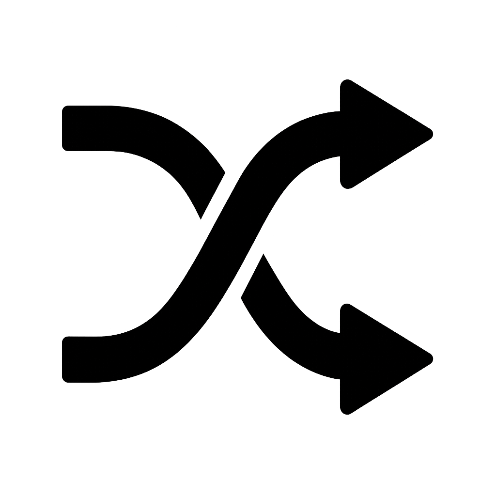

Converter hexadecimal para decimal

Explicação
Para transformar um número hexadecimal em decimal pode fazer o seguinte:
1- Hexadecimais são representados por valores de 0-9 e A-F.
2- A-F é o mesmo que 10-15.
3- Logo você após converter os valores, você os multiplica por 16 elevado ao valor da casa em que se encontra da direita pra esquerda começando por 0.
4- Você soma tudo e obtém seu Decimal.